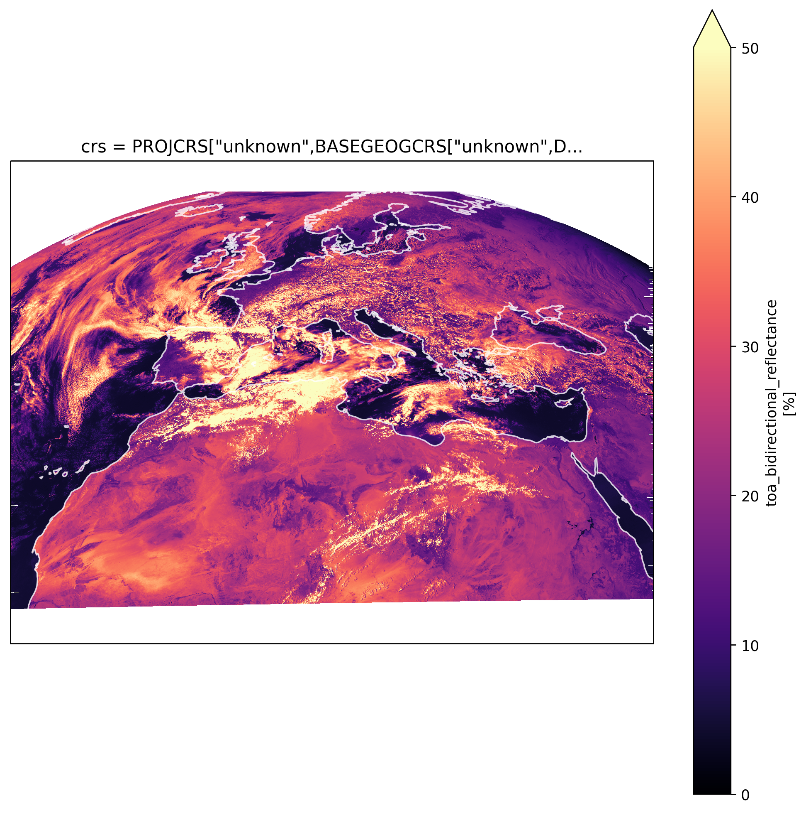
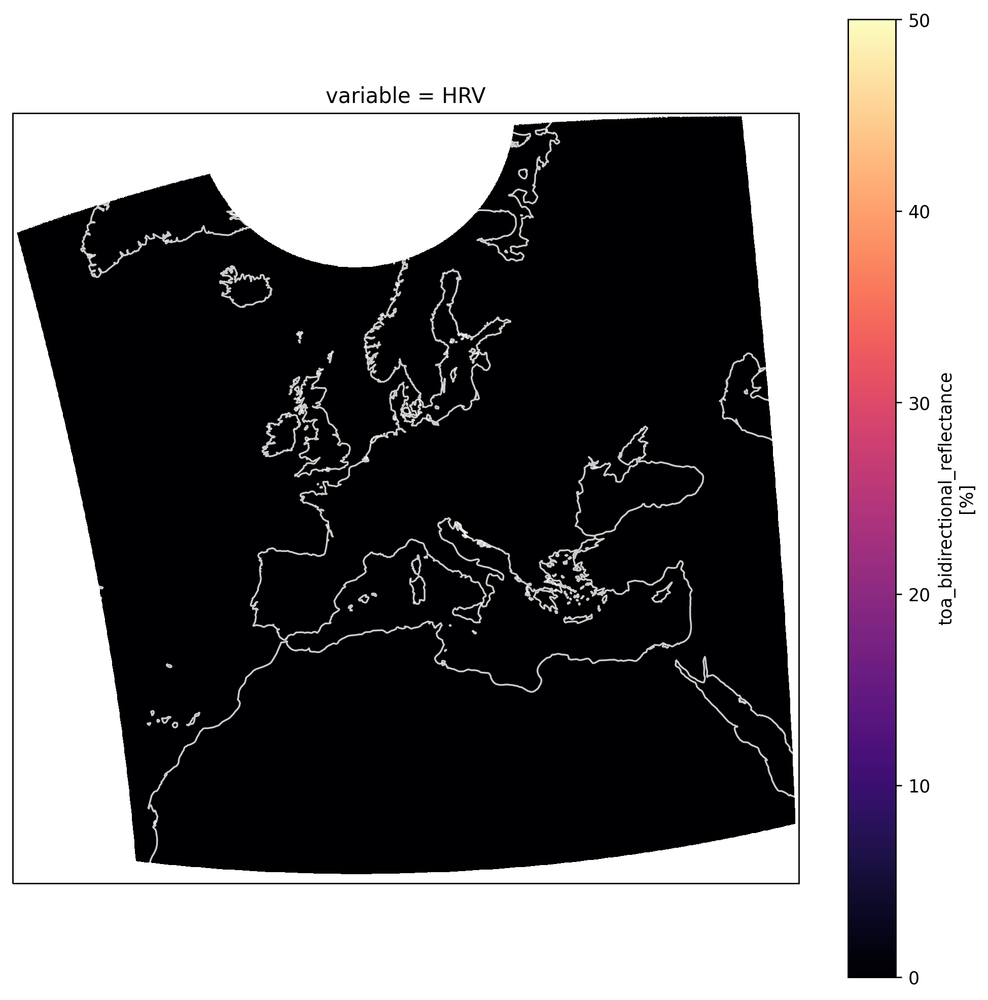

Zarr¶
Downloading: 100%|██████████| 1/1 [00:00<00:00, 2.10rows/s]
import os
import dotenv
import matplotlib.pyplot as plt
import cartopy.crs as ccrs
from IPython.display import JSON
User Inputs¶
data_dir = '../data/raw'
metadata_db_fp = '../data/EUMETSAT_metadata.db'
debug_fp = '../logs/EUMETSAT_download.txt'
new_grid_fp='../data/intermediate/new_grid_4km_TM.json'
new_coords_fp = '../data/intermediate/reproj_coords_TM_4km.csv'
in_zarr_bucket = 'solar-pv-nowcasting-data/satellite/EUMETSAT/SEVIRI_RSS/OSGB36/all_zarr'
out_zarr_bucket = 'solar-pv-nowcasting-data/satellite/EUMETSAT/SEVIRI_RSS/full_extent_TM_int16'
Loading Environment Variables¶
dotenv.load_dotenv('../.env')
user_key = os.environ.get('USER_KEY')
user_secret = os.environ.get('USER_SECRET')
slack_id = os.environ.get('SLACK_ID')
slack_webhook_url = os.environ.get('SLACK_WEBHOOK_URL')
Preparing Data to Save to Zarr¶
We'll start by loading in one of the datasets we've just downloaded, in this instance we'll take the most recent one by identifying it from the metadata db.
dm = eumetsat.DownloadManager(user_key, user_secret, data_dir, metadata_db_fp, debug_fp)
df_metadata = dm.get_df_metadata()
df_metadata.tail()
2021-01-08 09:43:50,879 - INFO - ********** Download Manager Initialised **************
| ('Unnamed: 0_level_0', 'id') | ('start_date', 'Unnamed: 1_level_1') | ('end_date', 'Unnamed: 2_level_1') | ('result_time', 'Unnamed: 3_level_1') | ('platform_short_name', 'Unnamed: 4_level_1') | ('platform_orbit_type', 'Unnamed: 5_level_1') | ('instrument_name', 'Unnamed: 6_level_1') | ('sensor_op_mode', 'Unnamed: 7_level_1') | ('center_srs_name', 'Unnamed: 8_level_1') | ('center_position', 'Unnamed: 9_level_1') | ('file_name', 'Unnamed: 10_level_1') | ('file_size', 'Unnamed: 11_level_1') | ('missing_pct', 'Unnamed: 12_level_1') | ('downloaded', 'Unnamed: 13_level_1') |
|---|---|---|---|---|---|---|---|---|---|---|---|---|---|
| 332 | 2020-01-01 00:00:07.683 | 2020-01-01 00:04:14.102 | 2020-01-01 00:04:14.102 | MSG3 | GEO | SEVIRI | RSS | EPSG:4326 | 0 9.5 | MSG3-SEVI-MSG15-0100-NA-20200101000414.1020000... | 99819 | 0 | 2021-01-07 20:39:02.727875 |
| 333 | 2020-01-01 00:05:08.795 | 2020-01-01 00:09:15.215 | 2020-01-01 00:09:15.215 | MSG3 | GEO | SEVIRI | RSS | EPSG:4326 | 0 9.5 | MSG3-SEVI-MSG15-0100-NA-20200101000915.2150000... | 99819 | 0 | 2021-01-07 20:40:35.463153 |
| 334 | 2020-01-01 00:10:09.908 | 2020-01-01 00:14:16.328 | 2020-01-01 00:14:16.328 | MSG3 | GEO | SEVIRI | RSS | EPSG:4326 | 0 9.5 | MSG3-SEVI-MSG15-0100-NA-20200101001416.3280000... | 99819 | 0 | 2021-01-07 20:42:01.806167 |
| 335 | 2020-01-01 00:15:11.021 | 2020-01-01 00:19:17.440 | 2020-01-01 00:19:17.440 | MSG3 | GEO | SEVIRI | RSS | EPSG:4326 | 0 9.5 | MSG3-SEVI-MSG15-0100-NA-20200101001917.4400000... | 99819 | 0 | 2021-01-07 20:42:42.769446 |
| 336 | 2021-01-07 20:50:09.828 | 2021-01-07 20:54:16.209 | 2021-01-07 20:54:16.209 | MSG3 | GEO | SEVIRI | RSS | EPSG:4326 | 0 9.5 | MSG3-SEVI-MSG15-0100-NA-20210107205416.2090000... | 99819 | 0 | 2021-01-07 21:37:09.110106 |
We'll then load in the file
filename = df_metadata.loc[df_metadata.index[-2], 'file_name']
native_fp = f'{data_dir}/{filename}.nat'
severi_area_def = reproj.get_seviri_area_def(native_fp)
seviri_crs = severi_area_def.to_cartopy_crs()
scene = reproj.load_scene(native_fp)
scene.load(['HRV'])
/Users/laurence/software/anaconda3/envs/satip_dev/lib/python3.8/site-packages/pyproj/crs/crs.py:543: UserWarning: You will likely lose important projection information when converting to a PROJ string from another format. See: https://proj.org/faq.html#what-is-the-best-format-for-describing-coordinate-reference-systems
proj_string = self.to_proj4()
/Users/laurence/software/anaconda3/envs/satip_dev/lib/python3.8/site-packages/pyproj/crs/crs.py:543: UserWarning: You will likely lose important projection information when converting to a PROJ string from another format. See: https://proj.org/faq.html#what-is-the-best-format-for-describing-coordinate-reference-systems
proj_string = self.to_proj4()
And visualise it to test that everything is working
fig = plt.figure(dpi=250, figsize=(10, 10))
ax = plt.axes(projection=seviri_crs)
scene['HRV'].plot.imshow(ax=ax, cmap='magma', vmin=0, vmax=50)
ax.coastlines(resolution='50m', alpha=0.8, color='white')
<cartopy.mpl.feature_artist.FeatureArtist at 0x7fdf79164ca0>

We now need to reproject it
%%capture --no-stdout
%%time
reprojector = reproj.Reprojector(new_coords_fp, new_grid_fp)
ds_reproj = reprojector.reproject(native_fp, reproj_library='pyresample')
CPU times: user 4.79 s, sys: 356 ms, total: 5.14 s
Wall time: 5.41 s
Which again we'll check through visualisation
fig = plt.figure(dpi=250, figsize=(10, 10))
ax = plt.axes(projection=ccrs.TransverseMercator())
ds_reproj['stacked_eumetsat_data'].sel(variable='HRV').plot.imshow(ax=ax, cmap='magma', vmin=0, vmax=50)
ax.coastlines(resolution='50m', alpha=0.8, color='white')
<ipython-input-12-53f177b0781d>:2: UserWarning: The default value for the *approx* keyword argument to TransverseMercator will change from True to False after 0.18.
ax = plt.axes(projection=ccrs.TransverseMercator())
/Users/laurence/software/anaconda3/envs/satip_dev/lib/python3.8/site-packages/dask/core.py:121: RuntimeWarning: invalid value encountered in cos
return func(*(_execute_task(a, cache) for a in args))
/Users/laurence/software/anaconda3/envs/satip_dev/lib/python3.8/site-packages/dask/core.py:121: RuntimeWarning: invalid value encountered in sin
return func(*(_execute_task(a, cache) for a in args))
<cartopy.mpl.feature_artist.FeatureArtist at 0x7fdf55fddf70>

Compressing¶
We'll now develop our compressor class that will reduce the size of the datasets that we save to Zarr, in this instance we'll normalize the data and transform it to Int16. This has been found to reduce the size by ~50%.
#exports
def add_constant_coord_to_da(da, coord_name, coord_val):
"""
Adds a new coordinate with a
constant value to the DataArray
Parameters
----------
da : xr.DataArray
DataArrray which will have the new coords added to it
coord_name : str
Name for the new coordinate dimensions
coord_val
Value that will be assigned to the new coordinates
Returns
-------
da : xr.DataArray
DataArrray with the new coords added to it
"""
da = (da
.assign_coords({coord_name:coord_val})
.expand_dims(coord_name)
)
return da
class Compressor:
def __init__(self,
bits_per_pixel=10,
mins=np.array([-1.2278595, -2.5118103, -64.83977, 63.404694, 2.844452, 199.10002, -17.254883, -26.29155, -1.1009827, -2.4184198, 199.57048, 198.95093]),
maxs=np.array([103.90016, 69.60857, 339.15588, 340.26526, 317.86752, 313.2767, 315.99194, 274.82297, 93.786545, 101.34922, 249.91806, 286.96323]),
variable_order=['HRV', 'IR_016', 'IR_039', 'IR_087', 'IR_097', 'IR_108', 'IR_120', 'IR_134', 'VIS006', 'VIS008', 'WV_062', 'WV_073']
):
locals_ = locals()
attrs_to_add = ['bits_per_pixel', 'mins', 'maxs', 'variable_order']
for attr in attrs_to_add:
setattr(self, attr, locals_[attr])
return
def fit(self, da, dims=['time', 'y', 'x']):
self.mins = da.min(dims).compute()
self.maxs = da.max(dims).compute()
self.variable_order = da.coords['variable'].values
print(f'The mins are: {self.mins}')
print(f'The maxs are: {self.maxs}')
print(f'The variable order is: {self.variable_order}')
return
def compress(self, da):
da_meta = da.attrs
for attr in ['mins', 'maxs']:
assert getattr(self, attr) is not None, f'{attr} must be set in initialisation or through `fit`'
if 'time' not in da.dims:
time = pd.to_datetime(da_meta['end_time'])
da = add_constant_coord_to_da(da, 'time', time)
da = (da
.reindex({'variable': self.variable_order})
.transpose('time', 'y', 'x', 'variable')
)
upper_bound = (2 ** self.bits_per_pixel) - 1
new_max = self.maxs - self.mins
da -= self.mins
da /= new_max
da *= upper_bound
da = (da
.fillna(-1)
.round()
.astype(np.int16)
)
da.attrs = {'meta': str(da_meta)} # Must be serialisable
return da
%%time
compressor = Compressor()
da_compressed = compressor.compress(ds_reproj['stacked_eumetsat_data'])
CPU times: user 20.5 ms, sys: 1.85 ms, total: 22.3 ms
Wall time: 21.2 ms
Saving to Zarr¶
We'll now create a helper function for saving the data-array to a zarr database
# exports
get_time_as_unix = lambda da: pd.Series((pd.to_datetime(da.time.values) - pd.Timestamp('1970-01-01')).total_seconds()).astype(int).values
def save_da_to_zarr(da, zarr_bucket, dim_order=['time', 'x', 'y', 'variable'], zarr_mode='a'):
da = da.transpose(*dim_order)
da['time'] = get_time_as_unix(da)
_, y_size, x_size, _ = da.shape
out_store = gcsfs.GCSMap(root=zarr_bucket, gcs=gcsfs.GCSFileSystem())
chunks = (36, y_size, x_size, 1)
ds = xr.Dataset({'stacked_eumetsat_data': da.chunk(chunks)})
zarr_mode_to_extra_kwargs = {
'a': {
'append_dim': 'time'
},
'w': {
'encoding': {
'stacked_eumetsat_data': {
'compressor': numcodecs.Blosc(cname='zstd', clevel=5),
'chunks': chunks
}
}
}
}
assert zarr_mode in ['a', 'w'], '`zarr_mode` must be one of: `a`, `w`'
extra_kwargs = zarr_mode_to_extra_kwargs[zarr_mode]
ds.to_zarr(out_store, mode=zarr_mode, consolidated=True, **extra_kwargs)
return ds
Now we can save it!
save_data = False
if save_data == True:
out_zarr_bucket = 'solar-pv-nowcasting-data/satellite/EUMETSAT/SEVIRI_RSS/full_extent_TM_int16'
ds = save_da_to_zarr(da_compressed, out_zarr_bucket, zarr_mode='w')
Loading Zarr Data¶
We'll start by defining a loading function and a replacement for the standard gcsfs.utils is_retriable function
We'll now read it in
%%time
loaded_xarray = load_from_zarr_bucket(out_zarr_bucket)
loaded_xarray.time.compute()
CPU times: user 760 ms, sys: 73.8 ms, total: 834 ms
Wall time: 3.56 s
<xarray.DataArray 'time' (time: 781)>
array(['2020-12-16T18:40:08.000000000', '2021-01-07T12:04:16.000000000',
'2021-01-07T12:09:16.000000000', ..., '2021-01-08T01:19:16.000000000',
'2021-01-08T01:24:16.000000000', '2021-01-08T01:29:15.000000000'],
dtype='datetime64[ns]')
Coordinates:
* time (time) datetime64[ns] 2020-12-16T18:40:08 ... 2021-01-08T01:29:15- time: 781
- 2020-12-16T18:40:08 2021-01-07T12:04:16 ... 2021-01-08T01:29:15
array(['2020-12-16T18:40:08.000000000', '2021-01-07T12:04:16.000000000', '2021-01-07T12:09:16.000000000', ..., '2021-01-08T01:19:16.000000000', '2021-01-08T01:24:16.000000000', '2021-01-08T01:29:15.000000000'], dtype='datetime64[ns]') - time(time)datetime64[ns]2020-12-16T18:40:08 ... 2021-01-...
array(['2020-12-16T18:40:08.000000000', '2021-01-07T12:04:16.000000000', '2021-01-07T12:09:16.000000000', ..., '2021-01-08T01:19:16.000000000', '2021-01-08T01:24:16.000000000', '2021-01-08T01:29:15.000000000'], dtype='datetime64[ns]')
And finally we can plot the results
fig = plt.figure(dpi=250, figsize=(10, 10))
ax = plt.axes(projection=ccrs.TransverseMercator())
loaded_xarray['stacked_eumetsat_data'].isel(variable=0, time=0).T.plot(ax=ax, cmap='magma', vmin=-200, vmax=400)
ax.coastlines(resolution='50m', alpha=0.8, color='white')
<ipython-input-19-f7e189d5f897>:2: UserWarning: The default value for the *approx* keyword argument to TransverseMercator will change from True to False after 0.18.
ax = plt.axes(projection=ccrs.TransverseMercator())
<cartopy.mpl.feature_artist.FeatureArtist at 0x7fdf4185de80>

We can also identify missing datasets which will be useful for filling them in later
#exports
def identifying_missing_datasets(start_date='', end_date='', eumetsat_zarr_bucket='solar-pv-nowcasting-data/satellite/EUMETSAT/SEVIRI_RSS/full_extent_TM_int16'):
# Identifying date range if not fully provided
if (start_date == '') or (end_date == ''):
ds_eumetsat = load_from_zarr_bucket(eumetsat_zarr_bucket)
start_date = ds_eumetsat.time.min().values
end_date = ds_eumetsat.time.max().values
print(f'Earliest {start_date}, latest {end_date}')
# have to loop this by month for the API
month_split = pd.date_range("2020-01-01T00:09:15.000000000", "2021-01-08T01:29:15.000000000", freq="M")
missing_datasets = []
for i in track(range(len(month_split) - 1)):
# Identifying all potential datasets over specified date range
datasets = eumetsat.identify_available_datasets(month_split[i], month_split[i+1])
# Extracting the datetime each dataset was finished
end_dates = [dataset['properties']['date'].split('/')[-1] for dataset in datasets]
cleaned_end_dates = pd.to_datetime(end_dates).floor(freq='s').tz_convert(None)
# Identifying missing datasets from the Zarr DB
ds_eumetsat = load_from_zarr_bucket(eumetsat_zarr_bucket)
end_dates_to_datasets = dict(zip(cleaned_end_dates, datasets))
missing_dates = set(cleaned_end_dates) - set(pd.to_datetime(ds_eumetsat.time.values))
missing_datasets.append([data for date, data in end_dates_to_datasets.items() if date in missing_dates])
return missing_datasets
missing_datasets = identifying_missing_datasets()
JSON(missing_datasets)
Earliest 2020-01-01T00:09:15.000000000, latest 2021-01-08T01:29:15.000000000
JSON(missing_datasets)